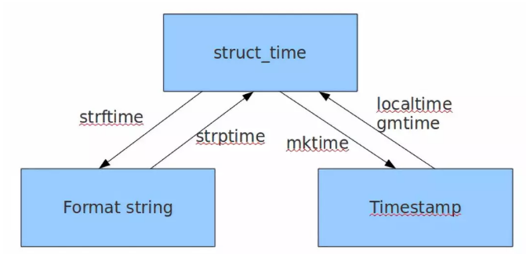
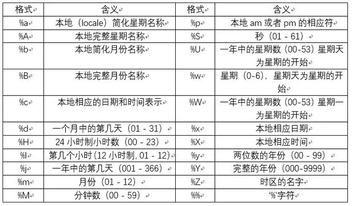

[TOC]
Python 的时间类型处理
Python中和时间相关的模块包括time datetime calendar
time
在time模块中时间表示的格式主要有三种：
- timestamp（时间戳）
时间戳表示的是从1970年1月1日00:00:00开始按秒计算的偏移量。
如：1528116025.5841389，它表示的就是2018年6月4日10:40:25距离1970年1月1日00:00:00的总秒数。 - struct_time（时间元组）
它由九个元素组成，如：time.struct_time(tm_year=2018, tm_mon=5, tm_mday=22, tm_hour=15, tm_min=35, tm_sec=51, tm_wday=1, tm_yday=142, tm_isdst=-1) - format string（格式化时间）
前面两个时间表示的格式可能对电脑来说，较易读懂，但是对于我们人类来说，却很复杂，因此格式化之后可以使时间更具可读性，它不仅有固定格式还有自定义格式。

time转换为struct_time元组
1 | import time #导入时间模块 |
1553225996.474412
time.struct_time(tm_year=2019, tm_mon=3, tm_mday=22, tm_hour=11, tm_min=39, tm_sec=56, tm_wday=4, tm_yday=81, tm_isdst=0)
time.struct_time(tm_year=2019, tm_mon=3, tm_mday=22, tm_hour=3, tm_min=39, tm_sec=56, tm_wday=4, tm_yday=81, tm_isdst=0)
- time.localtime() 返回的是当前默认时区的元组信息
- time.gmtime() 0时区（格林尼治天文台）的元组信息
struct_time元组转换为time时间戳
1 | print(time.time()) |
1553226224.3220398
1553226224.0
struct_time元组转换成 format string
time.strftime(formatstring , struct_time) 将日期转换成文字列
- %Y表示完整的年份（000-9999）
- %m表示月份（01-12）
- %d表示月内中的一天（0-31）
- %X表示当地相应的时间表示
- %B表示本地完整月份名称
其余时间日期格式化符号：

1 | print(time.strftime("%Y-%m-%d %X",time.localtime(time.time()))) |
2019-03-22 11:45:43
format string 转换成struct_time
time.strptime(string, formatstring)
1 | print(time.strptime('2019-03-22 13:36:21', '%Y-%m-%d %X')) |
time.struct_time(tm_year=2019, tm_mon=3, tm_mday=22, tm_hour=13, tm_min=36, tm_sec=21, tm_wday=4, tm_yday=81, tm_isdst=-1)
按固定格式，time(struct_time)也可以转换成format string的
只是只能通过默认的固定格式（%a %b %d %H:%M:%S %Y），不太符合我们的使用习惯。
1 | print(time.ctime(time.time())) |
Fri Mar 22 13:39:40 2019
1 | print(time.asctime(time.localtime())) |
Fri Mar 22 13:40:42 2019
Pandas的to_datetime()
除了Python自带的日期处理模块，pandas也给我们带来很大的灵活性，自动帮我们选择可行的格式字符串。
pandas中的to_datetime()函数可以轻松将其转化为Python可识别的标准日期格式。
1 | import pandas as pd |
2018-09-04 00:00:00
2017-01-23 00:00:00
2016-05-06 00:00:00
2016-05-02 00:00:00
1976-08-21 23:18:00
chronyk时间解析库
chronyk是一个小型的第三方时间解析库，它可以将相对时间概念转换为标准时间。
这一库需在cmd命令行中输入：
pip install chronyk
进行安装。
chronyk包中包含一个Chronyk类，该类中定义了4个初始化参数：
timestr参数timestr表示需解析的时间字符串，其默认值为None，不传入这一参数时，Chronyk类会解析当前系统时间timezonetimezone是一个设置时区的参数，其值为当地时区与格林威治时间（世界时间）的偏移秒数，西区偏移量为正值，东区偏移量为负值，我国为东八区，与世界时间相差8个小时，偏移秒数为-28800（=-3600*8），其默认值也为东八区的-28800，当解析世界时间时，应将这一参数设置为timezone=0allowpastallowfutureallowfuture（allowpast）为布尔类型的参数，表示是否允许解析未来（过去）的时间，默认值均为True。
Chronyk类中也定义了一系列函数，用于将传入的时间字符串转换为不同的表示形式，以下举例介绍常用的timestring()函数、timestamp()函数及relativestring()函数。
timestring()函数
timestring()函数用于输出指定格式的标准日期。
函数中包含一个默认参数pattern=”%Y-%m-%d %H:%M:%S”。
1 | import chronyk #导入chronyk包 |
2019-03-22 14:10:15
2019-03-22 06:10:15
2019-03-22
timestamp()函数
timestamp()函数用于输出时间戳。
时间戳表示的是从1970年1月1日00:00:00开始按秒计算的偏移量，如1552713312.0表示2019年3月16日13:15:12距离1970年1月1日00:00:00的总秒数。
1 | t = chronyk.Chronyk("now") |
2019-03-22 14:16:17
2019-03-21 14:16:17
1553148977.0
3、relativestring()函数、timestring()函数
- timestring()函数是将一个表示相对时间概念的字符串（如：1 day ago）转化为一个具体的日期。
- relativestring()函数的作用与此相反，用于将具体的日期转化为一个表示相对时间概念的字符串。
1 | t = chronyk.Chronyk('now') |
2019-03-22 14:23:46
1 | t = chronyk.Chronyk("2019-03-30") |
1 | b = ["1 month ago","2 hours ago","2 days ago","in 3 days","2 days and 30 hours ago"] |
2019-02-22 14:28:02
2019-03-22 12:28:02
2019-03-20 14:28:02
2019-03-25 14:28:02
2019-03-19 08:28:02
1 | import time |
2019-02-09 11:59:59
2019-03-09 09:59:59
2019-03-07 11:59:59
2019-03-12 11:59:59
2019-03-06 05:59:59
以上代码编写的思路在于利用当前时间和过去时间之间的时间差来计算列表中时间的时间戳，再将时间戳转化为标准日期格式便解析出了列表b相对于”2019-03-09 12:00:00”这一时间的标准格式日期。